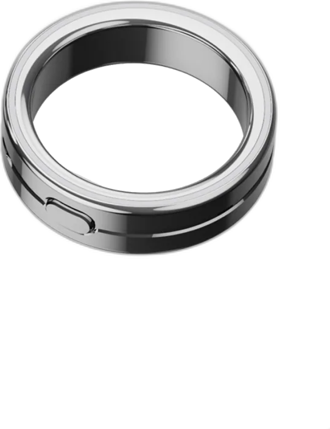

A conversation worth keepingKeep the ideas and decisions you want to return to. Stay involved in the moment.
You choose what matters.
Capture conversations and ideas with a ring. Bring the context you choose into your AI workflow.
 A small gesture. A moment kept.
Real life is the starting point.
A small gesture. A moment kept.
Real life is the starting point.

 02 / 05 CaptureVocci in everyday life
02 / 05 CaptureVocci in everyday life 03 / 05 RecallVocci in everyday life
03 / 05 RecallVocci in everyday lifeYour conversations are the beginning of something useful.
Start recording with a double-click. Keep the conversation or idea you choose, while staying present.
Return to a transcript, summary and action items, with speaker labels and multilingual support.
Access AI with a long press. Bring selected notes and summaries into your connected workflow, with your permission.
Give your AI the context to draft a follow-up, plan next steps and build on your ideas. Review what comes next.
01 Your hand. Your decision.
Start recording with a double-click. Keep the conversation or idea you choose, while staying present.
Return to a transcript, summary and action items, with speaker labels and multilingual support.
Access AI with a long press. Bring selected notes and summaries into your connected workflow, with your permission.
Give your AI the context to draft a follow-up, plan next steps and build on your ideas. Review what comes next.

Review moved to Thursday.
Share the pricing update before the meeting.
02 Find the useful parts again.
Start recording with a double-click. Keep the conversation or idea you choose, while staying present.
Return to a transcript, summary and action items, with speaker labels and multilingual support.
Access AI with a long press. Bring selected notes and summaries into your connected workflow, with your permission.
Give your AI the context to draft a follow-up, plan next steps and build on your ideas. Review what comes next.

The date, the decision and the next step.
03 Connected with your permission.
Start recording with a double-click. Keep the conversation or idea you choose, while staying present.
Return to a transcript, summary and action items, with speaker labels and multilingual support.
Access AI with a long press. Bring selected notes and summaries into your connected workflow, with your permission.
Give your AI the context to draft a follow-up, plan next steps and build on your ideas. Review what comes next.
Hi team,
Our launch review is now on Thursday. I’ll share the pricing update before we meet.
Draft · Ready for review04 Context carried forward. You decide what to send.
A closer look at the process behind the ring.


Vocci is an AI ring for capturing conversations and ideas, then bringing the context you choose into your AI workflow.
Double-click the physical button on the ring to start recording.
Transcripts, summaries and action items help you return to the useful parts of a conversation.
Use selected context with connected tools you authorize. Visit the product site for available integrations and setup details.
The ring uses titanium inside and out and weighs 3–5 g depending on size. Check the product page for fit and care guidance.
Yes. A deliberate action starts recording, so you choose which conversation or thought to keep.
Vocci uses encryption on the device, permission-based access and user-controlled sync. See the Trust Center for current details.
You choose the content to use and authorize access to connected tools.
Visit the Vocci Ring product page for current pricing, availability and sizing.
Read the current shipping policy and return policy on the Vocci store.
Get in touch through the Vocci Support Center.